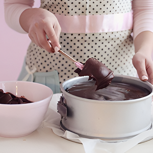

Nosotros
Mottled Cream es un emprendimiento de panadería, repostería y café con una idea sencilla, queremos ofrecer productos artesanales en un ambiente cálido y acogedor.
Nuestra historia
Este pequeño emprendimiento comenzo desde que mi madre aprendió repostería, desde ahí tuvimos el gran sueño de poder tener nosotros mismos uno propio,luego mi idea siempre fue que estuviera enfocado en que la gente pueda conocer más alla de las masas, que cada una se elabora de una forma distinta, es por eso que cada producto es elaborado con todo el amor y dedicación de nosotros para así ofrecer la mejor atención a nuestros clientes

Misión
Es elaborar panes, dulces y bebidas con dedicación, que la gente conozca más alla de lo que esta consumiendo, cuidando la calidad de cada ingrediente y la atención a quienes nos visitan.
Visión
Ser una cafetería y repostería reconocida por su sabor casero, su trato cercano y su compromiso con que la gente conozca sobre como se realiza cada producto.
Valores
- Calidad: elegimos bien los ingredientes y cuidamos cada preparación.
- Calidez: recibimos a cada persona como en casa.
- Honestidad: comunicamos con claridad lo que ofrecemos.
- Creatividad: buscamos nuevas recetas sin perder lo tradicional.
Objetivos
- Ofrecer un catálogo variado y siempre actualizado.
- Facilitar que nuestros clientes conozcan y elijan los productos desde su casa.
- Mantener la calidad y la frescura en todos los pedidos.
- Crecer junto a nuestra comunidad.